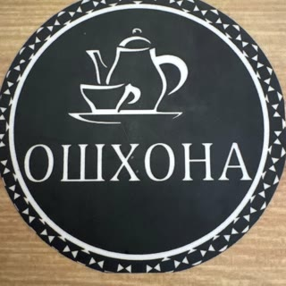
Две минуты пешком от Мякинино. Еду можно забрать с собой.
«Ошхона» значит «кухня».
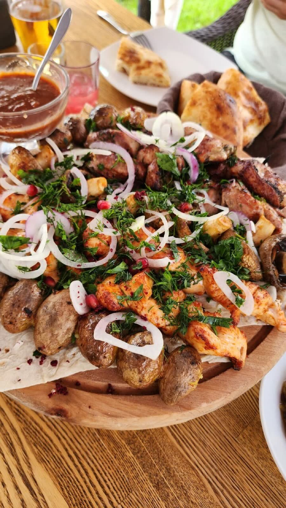
Мы через дорогу от Крокус Экспо. От метро Мякинино две минуты пешком.
Издалека ищите колесо обозрения и чёрный павильон с белыми буквами «КАФЕ ОШХОНА» на крыше. Вход с улицы, в ряду павильонов: над дверью та же вывеска.
Отличное тихое место. Главное - найти вход.
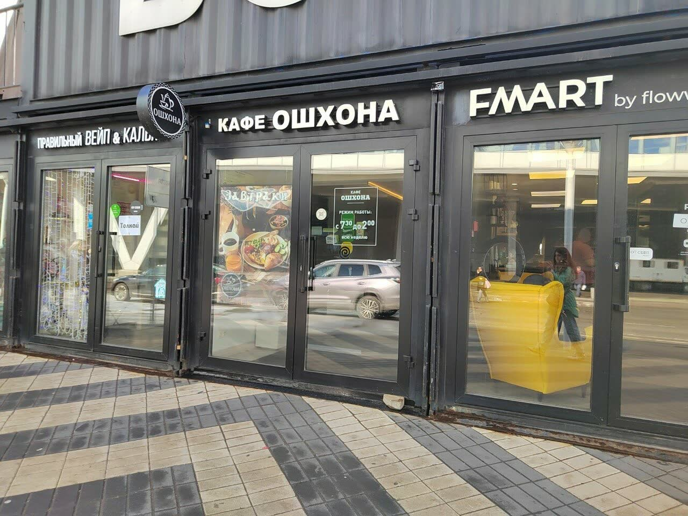
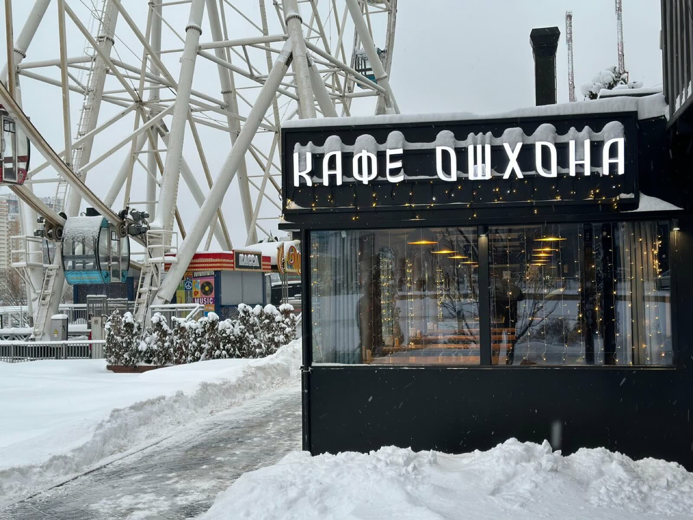
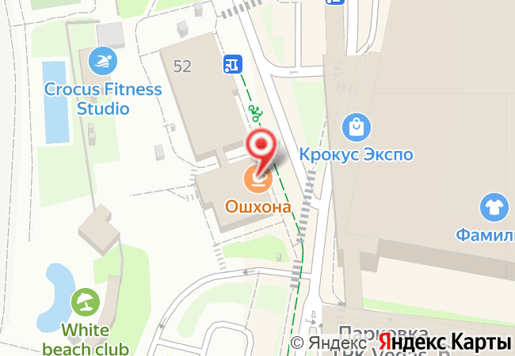
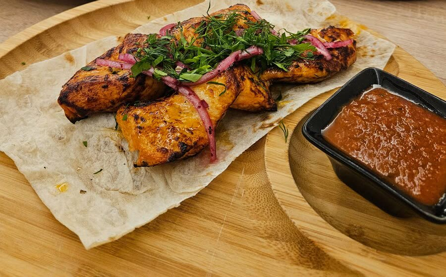
На мангале жарим баранину: корейку, люля, шашлык. Ещё телятину, курицу, сёмгу, дорадо и овощи.
Люля и шурпа из баранины, шашлык из телятины, семга и овощи на мангале - все вкусно…
Летом столы стоят в отдельных шатрах на газоне. Зимой работает тёплая веранда с панорамными окнами. Дни рождения отмечают в шатрах. Стол лучше обсудить заранее по телефону.
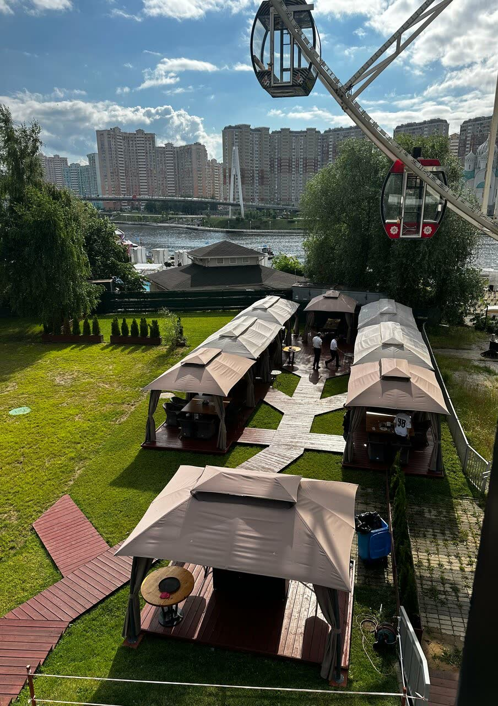
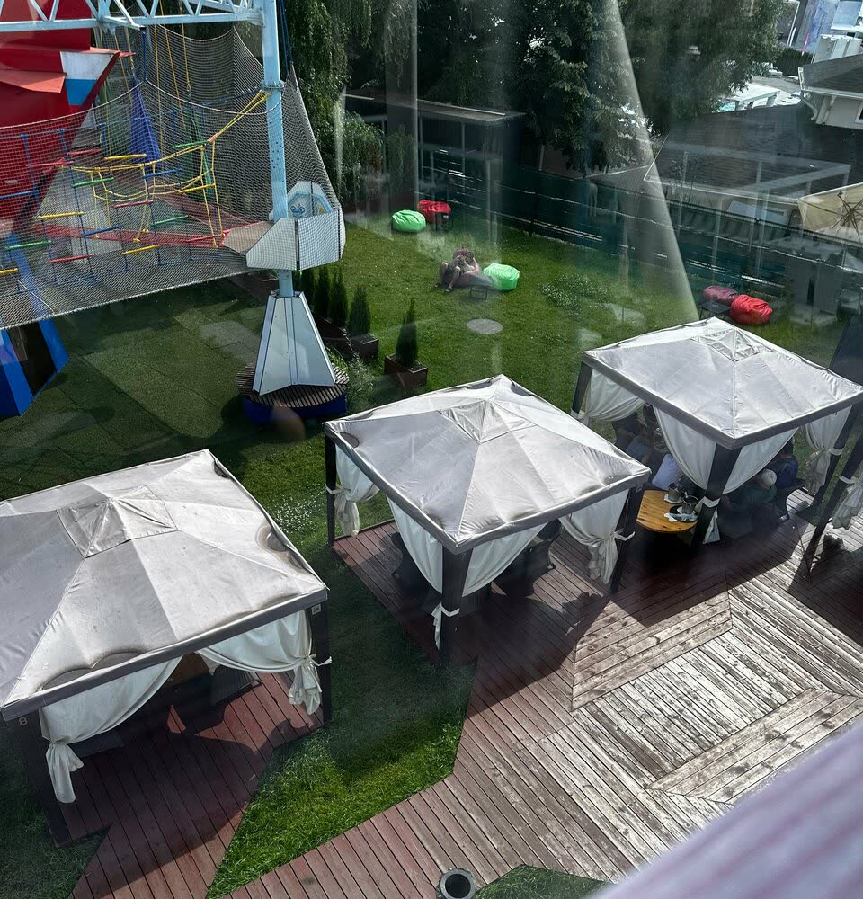
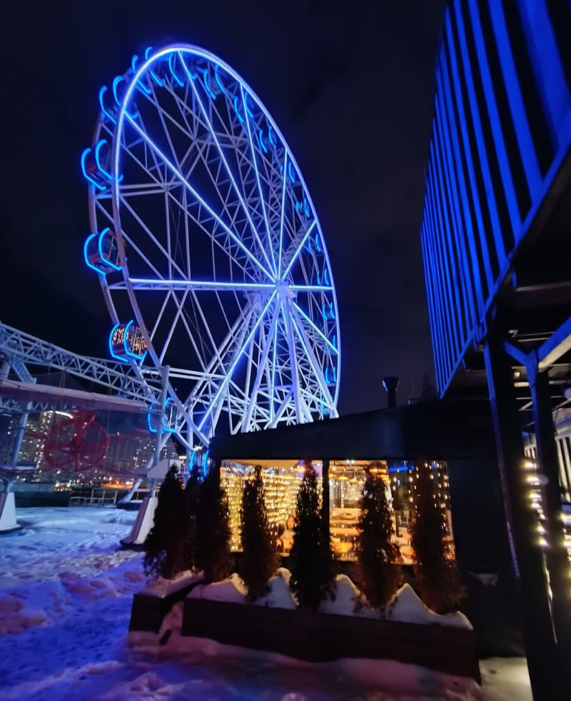
Уютная веранда, тихий уголок среди суеты возле выставочных павильонов.
Утром каши, яичница и омлет. Лепёшка с хрустящей корочкой, чай с чабрецом. Днём бизнес-ланч за 500 ₽.
В зале Wi-Fi, можно сидеть с ноутбуком.
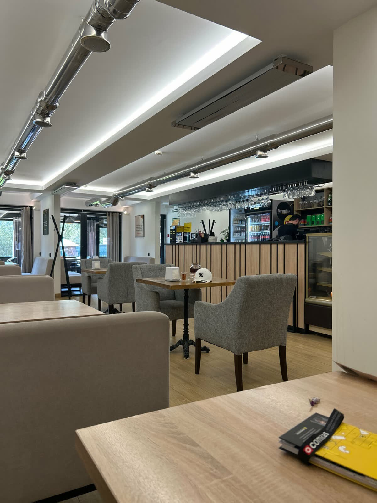
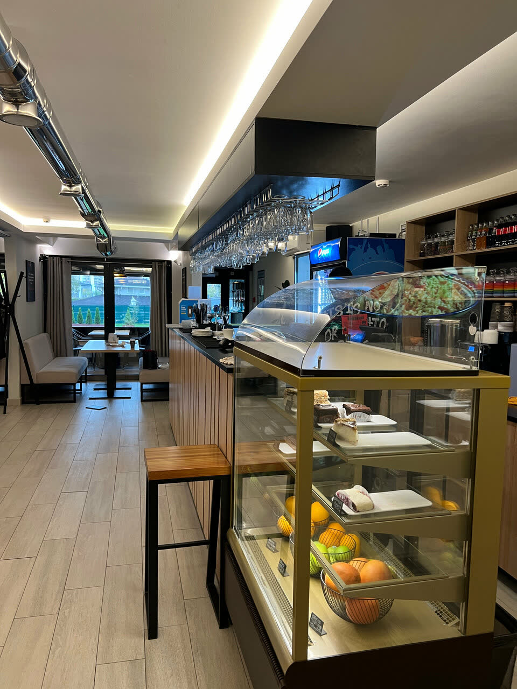
5,0 на Яндекс Картах, 362 оценки. Все отзывы
…а ушел с хорошим настроением: просто вежливые люди оставили впечатление на целый день.
Рядом с метро - 2 минуты пешком, относительно адекватные цены, хорошее качество мясных блюд (например: люля кебаб из баранины), официантка Диана слушает и слышит клиентов.
Рекомендую блюда на мангале, заказали дорадо и люля кебаб) порции громадные просто таки! Половину забрали домой
Безумно вкусная еда, постоянно возвращаемся сюда, когда хотим мяса! … Баранья корейка моя любовь тут!
Бесплатная парковка. Халяль. Есть детское меню. Еду можно забрать с собой или заказать через Яндекс Еду.